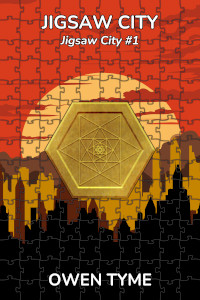
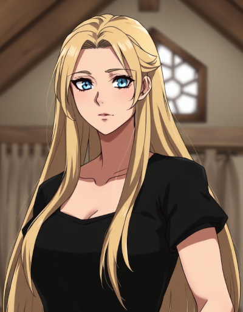
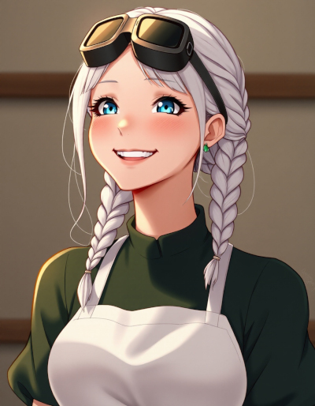
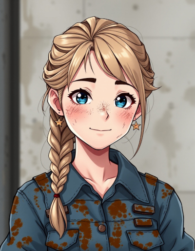
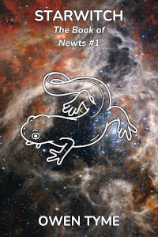
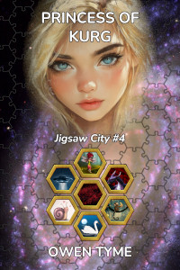

Tymely News
Elementalist #2
Elementalist is an album of mostly heavy metal that I'm working on as a companion to my Ashen Blades series of novels.
You can find the previous blog entry here.
On the Subject of Videos
I've been experimenting with making simple videos this week, using just a static image of the cover of the album, beside an AI-generated image of something appropriate based on the source novel/novella. If you'd like to see the videos for previous tracks, they'll be at the end of this blog post.
A Watery Grave
Track four of Elementalist is titled A Watery Grave, in which the Hunter goes to a summer camp infested with demons, to wipe them out, but along the way, the Water Spirit notices the Wood Spirit stuck inside her mind and attacks with intent to kill. It turns into a real nasty series of fights.
A Watery Grave us based on events from She Goes to Summer Camp, which is sold bundled as part of She Goes to War.
Lyrics
Took a dive in a deep lake,
Looking for demons hiding,
For teen summer camper's sake,
Thought to do the dividing.Notice, water spirit took,
Of tree spirit in my head,
And she did give me the hook,
Dragging me to certain dread!Chorus:
The ocean's spirit may force,
For me a watery grave!
Showing no sign of remorse,
If myself, I cannot save!Shadow save me from the depths,
Safely to land, I return,
By making the shadow-steps,
Forced retreat does my pride burn!By day I ride in canoe,
Nervous about water's wrath,
Hoping water has no clue,
But spirit does see my path!(Chorus)
Spirit strikes like semi-truck,
Confidence and ribs breaking,
Land on shore, with little luck,
Her punches leave me aching!Confront the spirit by night,
Holding hostage, spirit tree,
And the lake rises up to fight,
Though she never bows her knee!(Chorus)
For others, to safely keep,
I walk beside lake alone,
Water attempts, me to reap,
Attacking my blood and bone!I consume water's magic,
And force tree spirit to strike,
My demon fends off tragic,
Together, give her the spike!(Chorus)
Here's a link to the MP3 file, if you'd like to download it.
A Watery Grave is copyright 2026, Owen Tyme, all rights reserved, but free for your personal enjoyment. Lyrics by Owen Tyme, music generated with ACE-Step 1.5. E-mail me if you want to use it for something else.
Videos for Older Tracks
Tags: audio, music, elementalist
Friday Feature #3: Scarlet Eye: Homecoming
Today's feature is for a piece that became available in stores for the first time, today. Scarlet Eye: Homecoming is volume six of Ashen Blades and volume two of the sub-series, Scarlet Eye.
I waited a long time to write this piece, because I needed to firmly establish the series, before pulling this kind of serious plot thread.
A Little About Mashu'ra
The surface details have been a part of this series from the beginning, staring with the basics: Mashu'ra is a demon, but more specifically, he's a juvenile demon, more commonly known as an imp.
Long before the series began, he was summoned by a demon-witch, Annmarie Nossett, to serve as her familiar. Annmarie happens to be the mother of the main character of the series, The Hunter/Artemis Watson.
He used to be in the form of a full-grown black cat (and quite a large example, at that, probably a Maine Coon), but when his master died, he shrunk back down to the size of a kitten, a fact he found embarrassing.
He's also a very knowledgeable expert on both demons and witches, with unusual insight into demonic politics. In earlier novels, he served as a source of exposition, before the demon-hunting organization he eventually became part of knew much about the way demons thought.
He was also in love with his last master, because she chose to give him his soul. She chose to free him, even though she knew she was doomed to suffer for choosing to become a demon.
And that's the biggest thing that was previously known: he chose light and love over hate, a very rare thing for a demon to do.
More than anything else, however, he's always been a fixture of the series, offering sage advice to the main characters, because that was the only way he could fight demons.
The Central Question: Who is Mashu'ra, Really?
Of course all of those details are just facts, without much explanation as to how so lowly a demon could know so much and that's what this novel will begin to delve into.
However, I'll give you a few hints, which shouldn't spoil anything too big: Mashu'ra has been hiding so many things, but not because he didn't trust his allies. No, it was merely a matter of trying to leave his old life behind, to never look back, to live in the warmth and light of a better world.
That's because he never wanted to go home to the literal Hell he was summoned from. In point of fact, he was terrified of the possibility ever coming to pass.
At the end of the previous volume, that became exceptionally clear as he was hauled out of the magic hat of Artemis, to translate some demon writing, but as soon as he read the words, "Lady Oz’gozod sends her regards." he screamed and scrabbled his way back toward the hat he'd been pulled from, demonstrating a level of naked terror like nothing his friends had ever seen. He almost made it, only to shot by a high-powered rifle at the last moment, which killed him.
You might think that would be the end of his sad tale, but it isn't, because he was magically summoned to Earth as a spiritual projection and part of that means a free ticket home upon death, with little more than some awful pain to endure.
The trouble is, it also means he returned to the very place he left behind: the clutches of his first Master, Lady Oz'gozod, also known as The Imp Queen. She's also the head of the Torture Department of the Inquisitor's Office of Castigation City, which loosely passes for what demons might term justice (mostly hauling people off the street to be tortured, sometimes at a mere whim).
When Mashu'ra finally came to, it was to the worst possible nightmare: trapped in a tiny cell, at the mercy of Oz'gozod, one of the most vile demons that ever lived.
I held back from pulling this plot thread for a long time, but in the previous two books, Mashu'ra's role had grown smaller and it was time to give him some major character development.
I'm reminded of Malcom Reynolds from Firefly being tortured by that crazy fellow obsessed with pain and really "knowing" people, by holding them over the volcano, so to speak.
Sadly, that may be what lies in store for Mashu'ra, but along the way, you will get to know him in a way you never have. You will learn how he knows so much about demonic politics and you will learn exactly why a mere imp became a force even the highest ranks of infernal politics came to respect. He's always had hidden depths and now, it's time to reveal them.
Unfortunately, his situation seems completely hopeless, because there's no way his human allies would ever open a portal to Hell, just to rescue one demon, right? He's convinced of that fact, because it's plain and clear to him.
Meanwhile, on Earth...
Artemis is completely distraught, because the oldest friend she's got is in enemy hands, a situation she can't and won't accept, because he's more than an ally: he's her brother. Not a blood-relation, but that's how she feels about him. Fortunately, her friends are behind her and she's been tasked with planning a full-scale invasion of Hell itself.
It's not entirely unprecedented, however, because she once led a small rescue mission to do exactly that and she knows the lay of the land, though her information is eighty years out of date. On the other hand, the Ashen Blades recently made an interesting ally, by helping a demon to begin repenting for her numerous sins and she was one of the seven arch demons that rules Hell, namely Lust.
So, it's not impossible, but it's going to take serious magic and firepower, if only the various militaries of Earth can be convinced it's a good idea to finally strike back in the invisible war humanity has been a part of since before the dawn of civilization.
Then there's the trouble of sealing the portal when they're done, which requires something equivalent to nuclear ordnance, but there may be a bit of luck there, because rumor has it their black market arms dealer knows something about a collection of missing Russian suitcase nukes...
This is when the conflict between man and demon really heats up and it's going to be taken to the next level, because it's time for a little payback! It's time to bloody the nose of the biggest bully in the multiverse!
Interested? Here's Where You Find the Book!
The faithful companion of Artemis Watson, a kitten-shaped demon named Mashu'ra, was killed in the line of duty. He's always lived in her hat and he's like a brother to her, leaving her deeply upset and unable to calm down.However, there's a slim ray of hope, which from another perspective becomes a ray of horror: the imp originally arrived on Earth through summoning magic and dying merely returned him to Hell. Unfortunately, nearly every demon in the place knows he's a turncoat and the arch-nemesis of Artemis, Vogerath, has been waiting centuries for this to happen.
The Ashen Blades immediately tried a summoning spell to retrieve their friend, but another imp appeared in place of Mashu'ra, informing the kitten's friends who has him. If they want him back, they'll have to visit Hell and promise an unacceptable measure of cooperation that would surely doom the human race.
Meanwhile, Mashu'ra endures a nightmarish ordeal at the hands of his old boss, starting with magically-enhanced interrogation, then torture and brainwashing, using means both magical and mundane.
Artemis and her friends mount a desperate rescue mission and open a portal to that infernal world. Artemis leads the way, with military backup, using all of her power to cut a blood-soaked path through Hell, to reach the Outcast Detention Center, where Mashu'ra is held captive.
Will she be in time to rescue her dear friend before it's too late? Will she manage to save his soul, or will she rescue only his body? Will Mashu'ra ever be the same again?
Tags: friday-feature, novel
Elementalist #1

Once again, I'm making a musical album, this time titled Elementalist. The music centers around the main character of Ashen Blades, who's known by many names and insults, including The Hunter, Little Miss Secret, LMS, brat, Itsa Secret Watson, and most recently, Artemis Watson.
This album will revolve around her various encounters with the elemental spirits and the way defeating them in battle has been transforming her magical powers.
So far, I've got three tracks done, including The Hunter, Call of the Jungle and Unwanted War, which will be the first three and an excellent introduction for things to come.
So far, every song has been written from the perspective of The Hunter, but I have plans for at least one future track to be from the perspective of the Metal Spirit and if I can figure out how, one of them is supposed to be a duet, between The Hunter and the Smoke Spirit.
However, I'll be honest, here and now: the album isn't likely to be finished for quite some time, because some of the encounters with elemental spirits have not been written yet and I don't want to paint myself into a corner, through musical lyrics, something I did a little bit with Rowley's Roar (lesson learned, not making that mistake again).
Alternatively, I may break Elementalist up into a series of two or three albums and mix in some material unrelated to the elements.
Regardless, I'm finding inspiration for the novels while writing lyrics and the story is going to take some wild twists in the future, especially as the end of the series draws near.
Within the series, I may make reference to these songs, via Alice, the third personality of the Hunter. In retrospect, she's always been a little one-dimensional, little more than a stoner personality created through an unwanted splash of LSD in the face, but I think giving her some talent for music and other creative endeavors would be an interesting way to flesh her out in future volumes, since the three personalities of the Hunter have been getting along better in the volume I'm writing at the moment.
They're likely to start treating the Hunter's body like a timeshare in the novel to follow, to find a better mental balance. Since that's She Hunts Gremlins, it would be an amusing for Alice to be using AI to make music based on the Hunter's life story.
The Hunter
The first song is a heavy metal track titled The Hunter, in which she introduces herself, in song, giving a rough summary of her motivations.
I love the little echoing guitar plucks in this one.
You can read more about the Hunter from her character feature or you can go into greater depth by reading She Hunts Demons, which starts the series and by the way, the Ebook is currently free in most stores (Amazon hates independent authors doing permanent freebies, but you can request a price match).
Lyrics
Demon-hunter: my father,
Demon-witch: my own mother,
Little black cat: my brother,
I'm not one or the other!Within me is a demon,
But that is not all I am!
Within me is a human,
Conflict fills my every gram!Chorus:
Revenge, my favorite dish,
They say it is best served cold,
Hot rage, certainly my niche,
Can I, these feelings withhold?Also, a witch within me,
Giving me the best of flame,
My shadows seek to be free,
Yet no one gave me a name!The Hunter, I call myself,
Though I cannot speak my truth,
Not a model off the shelf,
And forever in my youth!(Chorus)
Parents dead by demon hand,
Every demon would I cease!
Will I rage throughout the land,
Or find little bit of peace?My inner grief never ends,
And demon curse took my voice!
He can never make amends,
And for me, there be no choice!(Chorus)
The war will last forever,
The fight is always dirty,
That demons I might sever,
But still time to be pretty!Heroes can show up a mess,
I think heroines should not,
I'm no damsel in distress,
The little black dress, my lot!(Chorus)
(Chorus)
Here's a link to the MP3 file, if you'd like to download it.
The Hunter is copyright 2026, Owen Tyme, all rights reserved, but free for your personal enjoyment. Lyrics by Owen Tyme, music generated with ACE-Step 1.5. E-mail me if you want to use it for something else.
Call of the Jungle
The second song is a heavy metal track titled Call of the Jungle, in which the Hunter is ambushed by the Wood Spirit in the jungles of Veitnam, in 1972, when she tracked a demon there on a seek and destroy mission.
This marks the beginning of her conflict with the elemental spirits, though it could also be termed a dialog, because not every spirit attacks her and some choose to join their minds to hers.
The beat of this one very much reminds me of a heartbeat, which gives it a certain animal urgency that's very fitting to the scenes from the novel it's based on.
This song is based on events from She Goes to War, if you'd like to read the original source material.
Lyrics
Demons did fill the jungle,
And I came to slay them all,
In mud, I took a trundle,
Not a very graceful fall.I heard the call of the wild,
It was pounding in my ear,
And the jungle whispered mild,
It drew my soul very near.Chorus:
Jungle high-jacked my body,
And did take it for a spin!
But her control is shoddy,
A fight she can never win!Rises up, my nature feline,
A panther, I now become,
Despite it, my will still mine,
I won't be put under thumb!She can't break me, I won't kill,
Every human, safe from me,
I would die upon that hill,
Before bowing to some tree!(Chorus)
"Mine!", say I to tree's spirit,
Of my body, mind and soul,
Felonious wood pirate,
So, go on, and take a stroll!In my heart, she's taken root,
Refuses to accept a hint,
While my friends press the dispute,
Fight for me, some little glint!(Chorus)
You might call me weed whacker,
After taking sword to tree,
And I really smack her,
With my old wakizashi!"Kneel before me now, or die,"
"Body-jacking spirit tree,"
"Kiss this very boot or fry!"
So she surrenders to me!(Chorus)
(Chorus)
Here's a link to the MP3 file, if you'd like to download it.
Call of the Jungle is copyright 2026, Owen Tyme, all rights reserved, but free for your personal enjoyment. Lyrics by Owen Tyme, music generated with ACE-Step 1.5. E-mail me if you want to use it for something else.
Unwanted War
The third song is a rock track titled Unwanted War, in which the Hunter laments, in retrospect, about the war she never wanted, which came to her, because she can't get the Wood Spirit out of her head and the other nature spirits eventually took notice, attacking out of familial rage.
This song is based on comments passed between Verda Bagley and the Hunter, during She Goes to Summer Camp, but their efforts to remove the Jungle Spirit from the girl's mind were no more than a passing comment. Technically speaking, that one is more properly termed the Wood Spirit, but the characters didn't really puzzle that out until the book after that, if I remember correctly.
Lyrics
Already fighting a war,
I didn't want another.
Elements gave me a chore,
And I can't whine to mother.Tree spirit did attack me,
Simply for wrong place, wrong time.
Out of my head and be free,
I don't want to pay the dime!Chorus:
Over my corpse, they'd rejoice,
Spirits seek my life to hew!
This girl has no better choice,
She'll have to win this war too!What of spirits, anyway,
And why don't they mind their place?
Why do they each, at me bray,
And occasionally chase?Air tried to slay me in sleep,
And Earth woke from her slumber!
Then Metal questions me most deep,
Fire also in the number!(Chorus)
What's a girl supposed to do,
With situation nagging?
Can I find a good way through,
Maybe send spirits packing?Can I do what none before,
No man, witch or demon can?
Force every one to my core,
And make spirits my divan?(Chorus)
I'm resigned to stupid fate,
The war of spirits, to win.
They'll probably always hate,
But I can ignore their din.Mine, will their powers soon be,
For revenge, I may obtain.
For my most violent spree,
Ensuring all demons, slain.(Chorus)
Here's a link to the MP3 file, if you'd like to download it.
Unwanted War is copyright 2026, Owen Tyme, all rights reserved, but free for your personal enjoyment. Lyrics by Owen Tyme, music generated with ACE-Step 1.5. E-mail me if you want to use it for something else.
Tags: audio, music, elementalist
Friday Feature #2: Jigsaw City
Jigsaw City is a tale of a young woman fighting to retain her sanity as an ancient, magical city slowly takes over her mind and body, because she accidentally duplicated some of its magic into her mind. This novel will provide lots of action, magic, a fun space-battle, a huge aerial battle and a ton of the main character showing off what she can do with a pair of short swords. There's also a tiny hint of romance (basically, just some kissing scenes).
Oh, and by the way, the Ebook is free!
If you read this novel, please write a review. Amazon, Barnes and Noble and Goodreads are decent places to do so. You can also leave a review on Royal Road
Just a Normal Girl, or is She?
Nicole Jacobs is one of my personal favorite characters. She's the daughter of the main character from The Wizard's Scion, a young woman whose life has finally ceased to be dictated by others. She's to the point at which both her adoptive and biological parents have left her to decide for herself and despite the fact she's living in a far-flung future, with endless opportunities to study any subject she desires, both magical and mundane, she has no idea what she wants.
Between novels, she spent a year studying dragons, until she became the foremost expert on them, but that was just the means to put off the real and very basic decision about what to do with her life. It isn't properly explored until later novels, but it was also the means to stuff her feelings about the loss of her birth father, rather than actually facing them.
I enjoy that empty slate feeling and the uncertainty that goes with it, because it makes her relatable, since most everyone goes through something of the like during their early adult life.
I love the endless capability of this woman, because she dances ballet, sings, performs on stage, she's a top-notch swordswoman and she's one of the best users of magic her home world has ever produced. Oh, and she graduated high school with a degree in chemistry.
Setting her significant skills aside, she's also a half-troll with a unique talent for deep analysis of any spell she comes into contact with, because she can easily copy any form of magic, an ability she was born with. As an infant, she copied both her mother's innate regeneration and troll song powers. Next, she was held by a dwarf nurse and copied their anti-magic power, then she was handed off to her adoptive mother, copying the powers of a strong witch and necromancer.
She really could have set her mind to most anything, but nothing really appealed, aside from dragons, which was an area for research, not really a vocation, unless she wanted to take up dragon-slaying, which she did not (she loves them too much).
Knowing her love of dragons and the one last hole in her research, at her birthday party, her birth father's familiar gives her a dragon's egg, the hatching of which is covered in chapter one.
However, that's not the only gift she got for her birthday and a rather eccentric wizard sent her a small, hexagonal, brass coin, which is laden with heavy magic. In a foolish attempt to analyze it, she made direct skin-to-metal contact without a glove and copied the base spells of its enchantment into her mind.
That's the true beginning of the plot, right there, because she begins dreaming about the coin while she naps during the process of hatching the egg. She has no idea, but she's become an integral part of something grand beyond anything she could have imagined: the ancient, magical City of Kurg, built by the Ulkun, the stone men that inhabited her world first, millions of years earlier.
However, there are unforeseen consequences: the magic of Kurg is nigh unstoppable, because it's fractal in nature, storing a complete pattern of itself at multiple levels within each coin and every copy is capable of restoring the others when damaged.
It isn't long before she realizes her mistake and seeks the stone men, in search of a cure, but along the way, she learns to manipulate the coin, to magically unfold it into a building, via built-in space-warping magic. She first uses it as a handy way to carry around a portable home, without fully understanding it.
She goes on to get in all sorts of trouble and is directed by the stone men to search for the Architect of Kurg, who was sealed inside a folded piece of the city, three-million years earlier. Quite naturally, he's totally mad and ends up as Nicole's primary competitor in the race to collect Kurg pieces. After all, most good protagonists need a good villain...
The Inspiration
This inspiration behind this one is a little different, because it started with a conversation between myself and a friend about Dungeons and Dragons magic items, specifically a portable campsite. After some discussion, we decided there was potential to explore the concept further and I ended up running a GURPS game for him based on that idea, from which the concept of Kurg was born. Like the Kurg pieces, themselves, it started as a small idea that's only grown in size, since then.
Later on, as I transitioned toward focusing my creative energies on writing, rather than GMing, I decided it would make an excellent McGuffin for a collection-oriented series and I had Nicole Jacobs more or less just lying about, waiting for something to strike her fancy. The combination was a wonderful match.
The Plan
Jigsaw City is now the centerpiece of my plans for the conclusion of the over-arcing setting that also encompasses Ashen Blades, Sky Children, The Wizard's Scion and, oddly enough, The Book of Newts, despite the fact it takes place in a parallel universe. Nonetheless, these series are more deeply connected than they appear to be and characters are sometimes referenced in the others.
For example, the war between the Unseelie and Seelie fey that becomes important later in this series forms the backbone of Ashen Blades, because the Unseelie fell further and became demons. Another example is the appearance of The Book of Newts (the talking, magic book) in Jigsaw City, though I've not quite gotten to explaining its presence and how it got to the Milky Way.
I don't want to toss out too many spoilers here, but if you're patient, you'll see the biggest plot I dare write when I get all of my ducks in a row, for the series-crossing event that The Great Purpose will be, which will probably be volume eight (or maybe nine) of this series, which currently goes as far as four.
I really look forward to Nicole meeting The Hunter (A.K.A. Artemis Watson, Little Miss Secret, LMS, brat, etc.), from Ashen Blades, because the two of them will not get along and who doesn't like to see two protagonists beat the living snot out of each other? That will mostly be because neither one is very good at bending to the whims of others.
Interested? Here's Where You Find the Book!
Oh, and once again, I thought I should point out the fact the Ebook is free, though you won't find it on Amazon, due to exclusivity requirements, but you can still pick up print copies there.

Nicole Jacobs is twenty years old and unsure what direction to take in life, because the opportunities available to her are too numerous and no one job fits all of her talents, but she passes the time doing research on dragons. To that end, she hatches a dragon egg, but in the midst of the harrowing work required, she dreams of the ancient, magical City of Kurg, which yearns to be whole.She soon discovers, based on a chance encounter with a small magic item she'd been analyzing, that her mind has been dangerously intertwined with that of the city, which spreads through her brain like a disease, slowly taking over. At first, she's able to keep it under control by suppressing magic within her own head, but over time, it begins breaking past the road blocks she desperately erects in its path as it inches toward total control.
Seeking a cure, she's forced to research the ancient city, while the clock ticks down on her sanity and ultimately, her life. Meeting the strange, stone men that made the city, the Ulkun, she finds they have few answers for her, but suggest that if she locates the Architect of Kurg, one of their own kind, he might be of some help. Unfortunately, due to the fact he was trapped inside a small segment of the sealed city for millions of years, alone, he's quite insane, unhelpful and worse, eventually becomes hostile, forming a plan for galactic domination.
Instead, Nicole seeks the Life Giver, the mysterious being that created the Ulkun and ordered the construction of Kurg, while collecting pieces of the city, in the hopes of attracting their attention.
Will Nicole find a cure, freeing herself from the clutches of Kurg, or will she lose control of her own mind, taken over by the magic city? Will the Architect succeed at replacing everyone in the galaxy with obedient, magically-animated drones with no will of their own or will Nicole stop him?
Tags: friday-feature, novel
Friday Feature #1: Starwitch
For this feature, I'll be sharing some thoughts on Starwitch, a tale of science and magic working hand in hand, which centers around three sisters and witches, who blast themselves into space aboard a rocket powered by magic that uses water for propellant.
If you find yourself interested as you read, try clicking on the big image, above, or scroll to the end of this post, where all the links are listed, including the one for the audiobook.
Oh, and by the way, the Ebook is free!
If you read this novel, please write a review. Amazon and Goodreads are decent places to do so, as is Barnes and Noble. You can also do that on Royal Road.
Beginning of the End
Imagine, if you will, being run down by a massive star ship that's literally a mountain-sized block of granite, which has massive engines fueled by entire lakes of water and magical reserves so deep, it's faster than even a very small and light ship.
Imagine being dragged from your comparatively puny ship and into the depth of that flying mountain, to face her captain, the undead Queen of the space pirates, a witch that's a thousand years old and kept alive by consuming the souls of powerful witches.
The novel begins with the Blackwell sisters on their knees and facing a blank wall, because precious few are allowed to see the Pirate Queen's face, while the zombie witch analyzes their magic, looking for unique talents she doesn't already possess, with full intent to steal their souls, if they have something she wants.



As such, Amelia is returned to her badly damaged ship, Starwitch, because the pirate wants to see what she'll do with her fuel tanks nearly empty, leaving her with only one option to survive: attacking the ship that already ran her down.
Amelia repairs Starwitch in preparation for exactly that desperate move, despite the fact she has no space-worthy weapons and lacks the raw magic required for artillery spells. Nonetheless, without the propellant to reach a friendly port, she has no better option.
Amelia knows she's a dead woman if she doesn't at least get some water for propellant or rescue her sisters, who have strong enough magic to get Starwitch limping to safety, via a solar sail.
Knowing she's a mouse released by the cat, just to see what she might do next, she decides to shoot for a little role-reversal, to show the Queen what a weak witch that's spent a lifetime building machines can do when she's desperate. She follows the Queen with every intention of using her meager resources to take her sisters back or die trying.
However, since she's got days of waiting ahead, while she uses a weak solar sail to follow the flying mountain, her mind drifts to the past. She blames herself for all the trouble she got her family into, both on the ground and in space.
I think that's one of the best opening chapters I've ever written, because it really highlights the primary conflict of the novel, before beginning a sequence of flashbacks to reveal how Amelia got herself into that mess.
The Inspiration
You might be wondering what inspired me to write about witches in space, but it's relatively simple and deeply amusing: Kerbal Space Program. That game is a lot of fun and I spent endless hours building rockets, only to see most of them explode, usually on their way out of the atmosphere of the Kerbal homeworld.
I'd always thought space travel was quite complex and difficult, but in playing that game and getting rockets into orbit, then beyond, I realized it's not as difficult as I thought. Yes, it's complex, but each of the steps along the way is actually quite simple to grasp. It just becomes complex when all of them are combined.
Taking it Further
Throughout playing that game, I kept having a persistent and nagging thought: if this is so readily doable, why wouldn't a culture with access to magic have done it? Surely, with magic available, it would be even easier, right? After all, wizards are often mathematicians in fiction and that would give them the tools to work out the details of space flight.
Then there's another classic trope involving wizards: they're always peering up at the stars, through telescopes. Therefore, I imagined someone like a wizard staring at a gas giant and its moons, working out the principles of orbital mechanics, just like Isaac Newton did, so long ago.
However, I felt that was the point at which a fantasy story would have taken a very different turn compared to our own history, because a wizard with access to energetic magic could easily apply his magical talents to making a rocket fly.
All it would take is a simple heating spell and even crude technology would be enough. All it would take is something to heat water, which would turn it into steam and the more energy imparted, the more thrust it would provide. Imagine the most powerful of wizard, with the magic to reshape the landscape. Now imagine him turning his heart and mind to the stars, to build a rocket. It's not much of a leap, when you know just enough about space flight to be dangerous, as imparted by an amusingly educational game about shooting for orbit.
The setting behind this series ballooned outward from that idea, but I decided to go with witches, rather than wizards, because wizards tend to be solitary, but witches often come in threes.
To me, a small group of witches working together to build a rocket made more sense than a lonely wizard succeeding on his own, because with more hands to do the work, it can be finished sooner. After all, women tend to be more social, which might lead to greater cooperation.
However, this may be the secret, hidden truth behind the reason wizards live in towers. Perhaps their homes house rockets, which they build in preparation for the day they'll leave their world behind. Perhaps that's also the reason wizard towers are sometimes found abandoned, because they made it work...or at least achieved liftoff. Of course, there would be failures and for each solitary success, there would probably be a hundred that blew themselves to Kingdom Come, or just as deadly, crashed. There's a hundred things that could go wrong, of course, but what about the few that made it?
I also played with the idea of towers in this novel, because the support gantry of Starwitch began as a tower designed to hide its construction from prying eyes.
Witches in Space!
Nonetheless, this isn't the story of an enterprising witch experimenting until she got into space, because in this series, space travel was discovered long, long ago, in a place so far away it's not even in the same universe, but that's not really what Starwitch is about.
It's actually about three sisters seeking a place to belong, because their home village didn't accept them and neither did any other along the way, due to prejudice toward witches. They did eventually find a country that accepted witches and even gave them great respect, but only because the place had laws to use witches as weapons of war.
Unable to find peace on the ground, the Blackwell sisters launched themselves into space, only to meet the Queen of the space pirates, who believed the magic of their souls would extend her life for centuries to come.
This is a story about prejudice, family love and persevering in the face of insurmountable hardship, all in the hope of finding home, safety and a place to belong. Oh, and there's also a little touch of romance along the way. Well, it's not much romance, really, but it's still an important plot point for later novels (there's currently four of them, plus a related novella focused on one of the pirates).
Interested? Here's Where You Find the Book!
Oh, and once again, I thought I should point out the fact the Ebook is free, though you won't find it on Amazon, due to exclusivity requirements, but you can still pick up print copies there.
You can also listen to the audiobook from this nice little widget, though it's more a dramatization than audiobook, with a different voice for each character and emotional delivery:

Home, safety, and a place to belong – they seem so easy to find, at least for everyone but Amelia Blackwell and her sisters, who run from accusations of witchcraft at every turn.It started so simply, with a book. No one might have predicted that a book apparently filled with pictures of newts might lead to so much trouble, but The Book of Newts is no ordinary volume on taxonomic detail of amphibians. The magic book reveals its true nature only to Amelia, at the age of ten, teaching her mathematics, science and engineering – subjects she would not otherwise have been exposed to.
Ironically, she and her sisters are accused of witchcraft for having built a horseless carriage, because to the ignorant villagers, there’s no difference between magic and science. They settle in a new land, only to find the same breed of persecution.
In an unusual ray of hope, they’re told of a distant kingdom that openly accepts witches, but shortly after they settle there, the light at the end of the tunnel turns out to be an awful house fire surrounding their gilded cage: they’re drafted into the local military, because their new nation uses witches as living weapons.
The sisters accept the idea that peace will never be found on the ground. Looking to the stars, Amelia builds a space vessel powered by magic and steam, to carry them to a brighter future, hopefully without the strife that’s always followed them.
Unfortunately, the people of the stars have their own worries: an ancient, undead pirate queen, who consumes the souls of powerful witches to extend her own life. The Dead Queen takes Amelia’s sisters and leaves the magically-weak engineer to die, all as a sick form of sport.
Will Amelia survive long enough to overcome this greatest of all threats and rescue her sisters, or will they become fuel to feed the waning magic of a woman that should have been dead centuries before?
Bonus Content: Rowley's Roar
If you're still reading at this point, then you must be very interested, so here's something extra to make you smile, and yes, this is also free! (Well, actually, it's pay what you want):
Rowley's Roar is a musical album based on the first three novels of this series, telling parts of the story in song, from the perspective of a certain someone (I'm trying not to spoil things too much, by being intentionally vague).
The songs most relevant to this novel are Glass House, Ripe for the Taking, The Book of Newts and Mouse With a Gonne, which are tracks 4, 5, 6 and 8.
Glass House, Ripe for the Taking and The Book of Newts are relevant to the encounter between the Blackwell sisters and multiple pirates, during chapters 28-30 and 32, while Mouse With a Gonne covers the events of chapters 1 and 36-41. It includes some spoilers for the climax you may wish to avoid, at least until you've read the book.
Tags: friday-feature, novel
Published: Princess of Kurg
I'm pleased to announce Princess of Kurg, book four of Jigsaw City, has been published.
The Ebook was published last week and print copies just became available today.

Having collected the fragments of the magic city of Kurg from her home planet, Nicole turns her gaze upward, to the stars of the Milky Way, soon coming into conflict with gun-slinging snails, aliens, the dragon she raised from an egg, some really annoying monkeys with crossbows and even fairies.Barely sleeping, due to the stress, she's frustrated by the politics of running a city and the endless diplomacy required to gain access to every corner of the galaxy, but controlling her anger always was one of her weakest points.
Ruling a magic, flying city was never Nicole's dream, but with no better alternative, her reality increasingly begins to resemble one of her nightmares...
Will Nicole blow her top and possibly a few cities along the way, or will the poor woman find peace and a little quality sleep? Will she make the hard choices, or will the hard choices make her?
Tags: jigsaw-city, novel, publishing
Rowley Roars!
Rowley's Roar has now been published via Itch.io, including 14 regular tracks and 5 alternative versions. You can play it straight from the store page. The music is available in both FLAC and MP3 format.
It's pay what you want, but if you enjoy it, you can set the price above zero, to tip me.
You can also listen directly from this blog entry:
Tags: audio, music, roaring-rowley
Rowley's Roar #10
For today's blog post, one of the fictional characters from my novels will be sharing a few messages. No, I'm not going crazy. I'm just having a little fun with writing from the perspective of one of my characters, to explain her music.
Without further adieu, please once again welcome Captain Edwina "Roaring" Rowley, who shall be taking a moment to explain another song from an album we're compiling.
The Tiger Witch
Hey itches.
Sorry if I'm in a sad mood today, because we're nearly to the end of my story and I don't want to say goodbye. I don't know what will become of me after this, but I'll get to that in a moment.
So, there I was, the last pirate captain, even though I didn't want to be one anymore. It really sucks that all the others got to go legit after the Dead Queen was finally forced to bow the knee, but not me. I was specifically excluded, simply because the leader of the Pirate Hunters hated me so much and had the ear of the Blackwell sisters, who were the ones that made the offer of amnesty.
I'll never forget seeing Foundation Stone explode so brightly, she outshone the sun, followed by multiple general bone transduction broadcasts, from the Port Keepers that manage the Ice Palaces and handle most day to day communication.
Every time I heard that offer of amnesty, followed by the specific exclusion of myself, my heart twisted a little further, because I never wanted to be a pirate! I was so angry!
In the end, I made up my mind to fly to Cakana, the old harvest moon that used to feed the whole star system.
Since the people there had thrown off the shackle of living under the boot of the Newt Witches and had no contact with space, I figured no one living there would know anything about me. I planned to land Glass House in some remote corner and start over as a little band of traveling minstrels, something the remainder of my crew had no problem with.
I really miss them, because they were the best. The few I had left were my die-hard fans, who were willing to share my grave, if necessary. Mr. Zindo, the rest of my bridge crew and my chief engineer were my closest friends, but unfortunately, their loyalty cost them their lives. Zindo, in particular, was my...oh, never mind, you don't want to hear that.
I just wish I could have gone with them, but that was not my fate...
We got to Cakana orbit and just as I was observing, to make calculations for landing, I was surprised to see a ship rocket into space. Even more strange was the fact it was Starwitch, the little rocket the Blackwell sisters lived and traveled in.
I tried reaching out to the sisters with bone transduction, but got an immediate splitting headache as the magic rebounded, unable to located them. Instead, I recast the spell and focused only on the interior of the other ship.
That's the day I met Lieutenant Colonel Scarth Denholm, who I will curse to the day I die again! That insane woman got me killed, but I'm getting ahead of myself.
We soon learned each of us hated the Blackwell sisters for our own reasons. Furthermore, Denholm was on a mission of revenge, because the sisters had orchestrated the downfall of her nation.
It wasn't long before their ship docked in my landing bay and we met face to face.
I performed Twinkle and Spin for Denholm and her clearly gone in the head companion, who was most certainly a completely deranged blood witch. Surprisingly enough, both of them enjoyed the song.
We became friends, after a fashion, bonding over our shared hatred, and began planning our revenge.
Unfortunately, I realized far too late that Denholm was even more mad than her companion, which is quite the statement. Captain Kristina "Killer" Krauss was a blood witch, assassin and serial killer, but at least with her, I knew where I stood. As a pirate, I dealt with that kind of monster on a regular basis, because they were useful for boarding action.
Denholm, on the other hand, had been hiding a very self-destructive side. With the fall of her nation, which had been the foundation of her obsessive personality, she was completely directionless, aside from her desire to punish Amelia Blackwell for her betrayal. The trouble with that kind is that once they reach the end of the road and get their revenge, almost anything can happen.
By the time I realized that, I was already stuck riding the tiger wherever she led. I'd already agreed and backing out wasn't an option, because Denholm had a real psychotic need to punish betrayers.
In the end, my own hatred cooled and I decided to do the bare minimum to further Denholm's plans, then get as far away as possible, because Denholm's eyes glowed when she was angry.
Do you have any idea what it means for a witch's emotions to make their eyes glow?
It meant Denholm was in the same class as the primordial witches, the first generation, who were so powerful, they could overwhelm their own flesh, if they weren't careful with magic. The worst case of mana burn I studied in school resulted in one of the children of the first witch literally exploding, simply because she pushed her magic too far, too fast.
And let me tell you, that wasn't a small explosion. It vaporized an entire moon and disrupted the gas giant it orbited, leaving the other moons adrift, though that happened in another star system, long, long ago.
Getting back to the point, the Blackwell sisters turned out to be coming right to us on a little errand of their own, so we stayed put, to "welcome" them.
As usual, I took more punishment than I deserved, even though I only fired a warning shot. That's when Iris pulled her little remote-touch trick, literally beating most of my bridge crew half to death and poor Zindo took a full-strength kick to the family jewels! I could have sworn I heard something rupture, but once the rest of us were down, Iris invisibly kicked him in the head, presumably to end his suffering, because he was screaming pretty loud. Then Marta hit Glass House with the full power of the magic she'd stolen from the Dead Queen.
As my ship started to come apart, I decided it was time to do one good thing and kill Denholm. I grabbed my axe and strummed my heart out, like never before! I hit her with the full force of Myth Guitar and I hope I shattered her skull, because she was too crazy to let live!
I played for all my worth in my final moments and even kept going as I was sucked out in space. I kept going as long as I could, hoping to balance my personal ledger a little in my final moments.
I don't know how the battle turned out after that, but as my body began to freeze in the void, I found myself wondering why I'd only been stunned by the vacuum of space, which didn't make sense...
Here's The Tiger Witch for you to enjoy:
Lyrics
Met some witches near harvest moon,
Who knew of sisters Black Well!
Of like purpose, we attune,
Payback would be real swell!I forgot my own advice,
And teamed up for revenge sake!
I shouldn't have rolled the dice,
Just to have my final stake!Chorus:
I will now ride the tiger,
This crazy witch will kill us!
I'm an unwilling rider,
Can't we this fate, now discuss?Iris uses lethal intent,
And Marta's second to none!
My aid I shouldn't have lent,
To myself, what have I done?In regret, I grab my axe,
Roaring at the tiger witch!
Myth guitar, we pay the tax,
And kill that psychotic itch!(Chorus)
Knowing I'm dead by own hand,
I strum to balance my sheet!
It is not a gesture grand,
With my fingers moving fleet!I hope the tiger to see,
On the other side of veil!
To tiger, stand up to she,
And then go to my soul's jail!(Chorus)
My Glass House, she does now break,
Yet to my grave, I will play!
For more air, yet I do ache,
One more heart to music sway!Cannot breathe, my fingers freeze,
My life over, music done,
To the Gods, I now beg, "Please?"
Yet how can void only stun?(Chorus)
Here's a link to the MP3 file, if you'd like to download it.
The Tiger Witch is copyright 2026, Owen Tyme, all rights reserved, but free for your personal enjoyment. Lyrics by Owen Tyme, music generated by ACE-Step 1.5. E-mail me if you want to use it for something else.
Waiting in the Void
So, I died by explosive decompression.
Can't say it surprises me, because that's a pretty common fate for pirates. Thing is, in the old sailing days, defeated pirates would have walked the plank into waters that had been chummed, to bring on the sharks. However, in space, the closest thing to that is an airlock. That's the usual quick punishment that most every ship captain would use on captured pirates. It's a cruel and unusually painful execution method, but since we were cruel and often unusual, it was fitting.
On the other hand, I'm deeply confused by the fact that even though my body stopped, I didn't. Can you imagine getting spaced, and losing consciousness from the stunning strain of it, only to wake up some time later, merely uncomfortable? That's exactly what happened to me. I'm just lucky my eyes were open when I died, because otherwise, I would have spent the intervening years blind.
Yet, somehow, I kept my hand tightly wrapped around the neck of Myth Guitar. I can't help but smile at the image of a musician getting spaced, only to keep a good grip on her axe. Honestly, it's one of those perfect little things that life sometimes does, adding a little sweet to a bitter end.
I don't know how long I was out, but when I came to, I was alone, though there was some debris from my ship floating about.
I honestly have no idea how much time passed, but after a while, I hoped Nuva, the Goddess of Death, would come to take my soul to the afterlife. In fact, I started to silently pray for her intervention, because there's nothing worse than hanging about, with literally nothing to do.
I prayed for either rescue or a more permanent end, but nothing happened and I was forced to wait. Of course, that was not the end of my prayers, because I spent whole days and weeks turning my thoughts to Nuva and the rest of the Gods.
Eventually, the debris of my ship floated off, since every piece had its own differing velocity. I got to see some of it fall into the atmosphere and burn up, which was kind of pretty.
After seeing that, I crunched the numbers for my own orbit, in the hopes it might decay and bring me to an end, but I was frustrated to realize it was almost stable and would take decades to decay.
So, I mentally settled in for the long haul, composing lyrics and music in my mind. The album I've been sharing with you is the result and I must say, I'm kind of proud of it. I just wish I could try the songs out loud, because they're never quite the same same inside my head versus outside.
My next favorite hobby while I floated was trying to puzzle out what had happened to me, but since I literally flunked Necromancy 101 (I slept through every class), it took me quite a while to realize I'd become a zombie.
You see, I eventually turned my magical senses inward, discovering magic bonding my soul to my skull, which might be how a zombie is made. I don't know, but I'm definitely dead and my soul stuck around, so I must be a zombie, right?
Anyway, that left me with a nagging question: how did I become a zombie? I really don't know, but I have my suspicions. It could be that the Dead Queen put a delayed-activation spell on me, which was designed to turn me into a zombie upon death. From a skilled caster, those can be rather hard to sense.
That's the biggest possibility, because I could see the cruel monster reasoning that would be the perfect punishment for failure. Honestly, I wouldn't be the first witch she did that to. I can also reason that she liked me, despite the fact she treated me like sh...crap. Think of it along the lines of a favorite toy and yes, that is the way she treated me. If your favorite toy breaks, do you throw it out or try to fix it?
Yeah, she fixed me good. I hate that woman.
However, there's one big flaw in my reasoning, because most spells fall apart when their caster dies and I'm certain she's dead, because the Blackwell sisters vaporized her giant, granite star ship. So, if her soul passed on, how could it have maintained the spell that turned me undead?
That brings me to the other possibilities.
First, Nuva is pissed off at me and refused to collect me, but I suspect were that the case, she would have spoken with me, because that's her way. She isn't one to not explain herself.
Second, Nuva has some purpose in mind for me, similar to one of her Blessed, though obviously not so exalted, because she turned me undead, rather than restoring my life to me. On the other hand, if I'm to become one of the Blessed, she may be waiting until I'm no longer lost in space to restore my life and the zombie spell is the means to preserve me. I don't think this is it, but can't rule it out.
Third is some mixture of options one and two, which means Nuva extended the Queen's zombie spell, to preserve me until she's ready to have a word.
Honestly, I find myself asking: what is the Goddess of Death playing at?
Years have passed in silent solitude like no other I've ever known and all I long for is to hear another human voice, but that's the trouble: I have been hearing them. I don't know if I'm losing my mind, but Zindo sometimes speaks with me, as does Owen.
I mean, who is this Owen Tyme fellow? I don't know, but he sure is chatty, asking lots of questions about my life and when we're talking, I always hear him scribbling with a pencil. He tells me my life story is fascinating, but that's the last thing anyone wants to be to some crazy voice in their head, right?
Are they real or am I mad? Increasingly, I've begun to suspect the answer is both.
In the end, I just decided to go with the flow, because it was driving me crazy trying to ignore the voices. I know there's a little ironic humor there, but if I wasn't laughing, I'd be crying, not that I can do either at the moment.
Anyway, today I'm staring at Cakana again, because my slow rotations have brought me back around to face it and I see the most bizarre thing, which I ought to tell you about.
You ever see a hockey puck before? Kind of flat and wide, but round? Well, imagine one made of granite that's probably about twelve to fifteen miles wide and one thick, with a glowing cone of energy on top, which makes the whole thing look a little like a glowing witch hat.
It's one of the most beautiful and bizarre things I've ever seen, with a level of engineering sophistication that looks a little like Amelia Blackwell's work. Of course, that's just an educated guess, though it also reminds me a little of the Dead Queen's star ship.
I remember learning about the old generational ship designs, which carried people between the stars, which was how the Solus system was colonized, about three-thousand years back. Every one of them was a big granite block, because that stone can easily provide a surplus of useful magic. My best guess is that it's meant to be a colony ship.
The walled city I see inside that energy field only adds to that impression, but the magic keeping is safe seems to be failing and fading. That's probably from the wind pressure straining the field, becaise they're rising far too fast.
And now it's turning in the air, to face the other way, probably to present a bare face, rather than something inhabited. It's gaining speed and the underside is glowing quite fiercely, as if they've really got something against being anywhere near the ground.
You know what? After all these years of pleading with the Gods for rescue or my final condemnation to the not-so-gentle ministrations of Nyna, the Goddess of Punishment, I think I've got my answer, because that hunk of rock is coming right at me and I'm probably going to shatter like a flash-frozen rose.
Oh well. Either way, it's an end to my long torment and that's all I want.
Wish me luck and here's what will probably be my final song, little itches, titled Waiting in the Void:
Lyrics
Chorus:
For forgiveness, I do pray,
And someone to come along.
Wish my myth guitar to play,
Maybe even fix my wrong.Waited for Goddess of Death,
And was Hopeless in the Void.
I could not take in a breath,
Stared at passing asteroid.Goddess Nuva, where are you?
I do fear you may be late,
Can't say that I mind the view,
But please tell my final fate.(Chorus)
I can't breathe and I can't move,
So how do I cogitate?
With my axe, would I dare groove,
But all I do: pass the date.Fill my time composing tunes,
Because my fingers done froze.
I watch all the dancing moons,
Wishing I could scratch my nose.(Chorus)
Filled with regret for my way,
And better option, a lack.
For punishment, I may pray,
Or perhaps, a better track.Passing the years, months and days,
Arrange lyrics in my mind,
Trying to push off the craze,
Of fool's fate, self-assigned.(Chorus)
A zombie, I have become,
Waiting in the void, I am.
All of my flesh is now numb,
Delaying this soul's exam.At harvest moon, I do stare,
Flying mountain surprises me.
Coming at me, I do swear,
Moving too fast, do you see?
Here's a link to the MP3 file, if you'd like to download it.
Waiting in the Void is copyright 2026, Owen Tyme, all rights reserved, but free for your personal enjoyment. Lyrics by Owen Tyme, music generated by ACE-Step 1.5. E-mail me if you want to use it for something else.
Rowley's Parting Words
Well, little itches, I'm shocked.
That ship really put on the brakes, just as soon as it was out of the atmosphere, and I was almost gently scooped up, with the still-warm underside of the hull thawing me out.
The acceleration from that point on was less, though they were probably shooting for escape velocity, which was handy, because it provided just enough force for me to walk the ship's underside.
I got to the edge and looked around, spotting an airlock. From there, it was just a simple matter of using a little gravity magic to keep me in contact with the side as I climbed to that hatch.
Now I'm inside and this place is like a maze. I don't know what's going on, but I hear people shouting. I think I'll go say, "Hi!" Maybe I can be of some assistance?
However, a few parting words, my friends:
Remember what I said once before? Accept others for who they are and don't push them to the edge. That's important, the most valuable lesson I've ever learned, because you never know what might happen. Better to treat people with the decency and respect I never got.
Here's another little gem: hatred isn't the way. All it does it hurt people. I don't know if I'll ever forgive Sakura for the way she treated me and I'm still pretty angry with Denholm for getting me killed, but I guess I'll have to take my own advice and try to let go of my own rage.
Love and kisses, ladies and gentlemen. Love and kisses for all! Goodbye and good journey to all of us!
A Message From Owen
That's the end of this little musical journey, at least for now, though I do have other musical characters in my novels that might merit similar attention. My thinking is I may make some dwarf music to honor some of the characters of The Wizard's Scion, with a chorus of basses and tenors. Some mining and battle music would be good, then there's always Last Keg, which is another song that ought to get made, since it's so important to those characters.
Then there's Lyra, Nicole and Ida, the Siren Sisters, for whom music has always been an important part of their story. The troll birthing and healing songs should be written. Might have to put together an album of troll music.
Captain Edwina "Roaring" Rowley will next be seen in volume four of The Book of Newts, Witchhome. Putting together this album helped me sort out my twisted-up feelings about The Book of Newts and I feel like I can work on the series again.
However, I have a lot of work to do on Ashen Blades/Scarlet Eye and Jigsaw City, so my plans are still taking shape. I'll be playing this by ear, to write the best novels I can for both you and myself, because I'm not going to force the inspiration. That never works.
This album will soon get a little final polish in the form of possibly fading some songs out at the end and in one case, I will probably cut the end off with a fade, because it got a little crazier than I preferred, though the rest of it is spot on. Other songs may get padded with a little silence.
When it's ready, it will be going on Itch.io, since Bandcamp doesn't allow AI-generated music. The price will be pay-what-you-want, since I didn't make this album for money's sake. I really started out to get one song made for a future audiobook, but I had so much fun making Twinkle and Spin, I kept going.
Have a great day. I hope you enjoy my novels and the music that goes with them!
Tags: audio, music, roaring-rowley